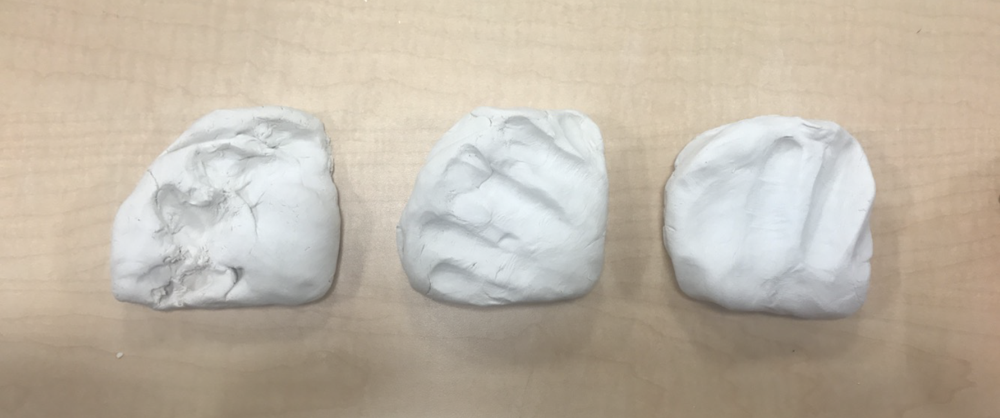

Beyond tool boxes and unwieldy pencil cases, artists lack a convenient method of carrying the various pens needed to sketch on the spot.
The SketchPack attaches to a user's sketchbook for a more intuitive hold of the sketchbook and accessibility of drawing utensils. I created this product for my Design and Manufacturing class, in which we learned various manufacturing methods from sand casting to turning in order to take our products from concept to completed product.
After a quick brainstorm of potential problems to solve, I honed in on the difficulty of switching pencils while sketching standing up. To combat this, I would create a product to hook onto a sketchbook and allow users to easily switch out drawing utensils. Considering the scope of the product, I chose wood and aluminum for materials and limited the design to three unique pieces to manufacture.
SketchPack sketches with user story
Through a quick functional prototype made of foam core, cardboard, and clay I learned that I needed to...
a) shorten the SketchPack for easier access to pens
b) cut down from three to two pieces in order to simplify the wood metal connection
Prototype hooked onto sketchbook
After developing my vision for the SketchPack, I tested out various methods to manufacture the pieces that would make up the SketchPack. Here I learned how to work with the machines and materials instead of against them as well as determining the thickness and type of metal and wood I would use.
One of the most important functions of the SketchPack is making it easier to support a sketchbook while standing. I studied the way in which people gripped their sketchbooks by getting imprints of their hands in clay and then designed two grips for the SketchPack.
1. This hand piece allows users to grip the hand piece with their fingers in the divot. It allows for more flexibility of grip.
2. Taking a different approach, this hand piece is hollow on the inside. This allowed users to support the weight of their sketchbook with a few fingers.
A SolidWorks model helped me visualize the finished product. I solidified the dimensions of each piece as well as the connections between parts.
The cap in this model was not created in order to narrow the scope of the project.
Although I had each detail planned out, the machining process took many trials. I milled the aluminum sheet at least six times, learning to add a tape buffer between the clamps and the sheet and many more lessons. With each step there was adjustment to make sure the pieces fit together.


Coming into this project with no manufacturing experience, I truly learned the most I have ever learned in 10 weeks. Some of my learnings are listed below.
1. Good design is not just creating something new and
aesthetic, but is thriving within the limits of your resources. The real world has more limiting factors than the sketchbook
2. Work with materials and machining processes instead of against them
3. The creation process contains many unknown obstacles: prioritize, adapt, and let things go